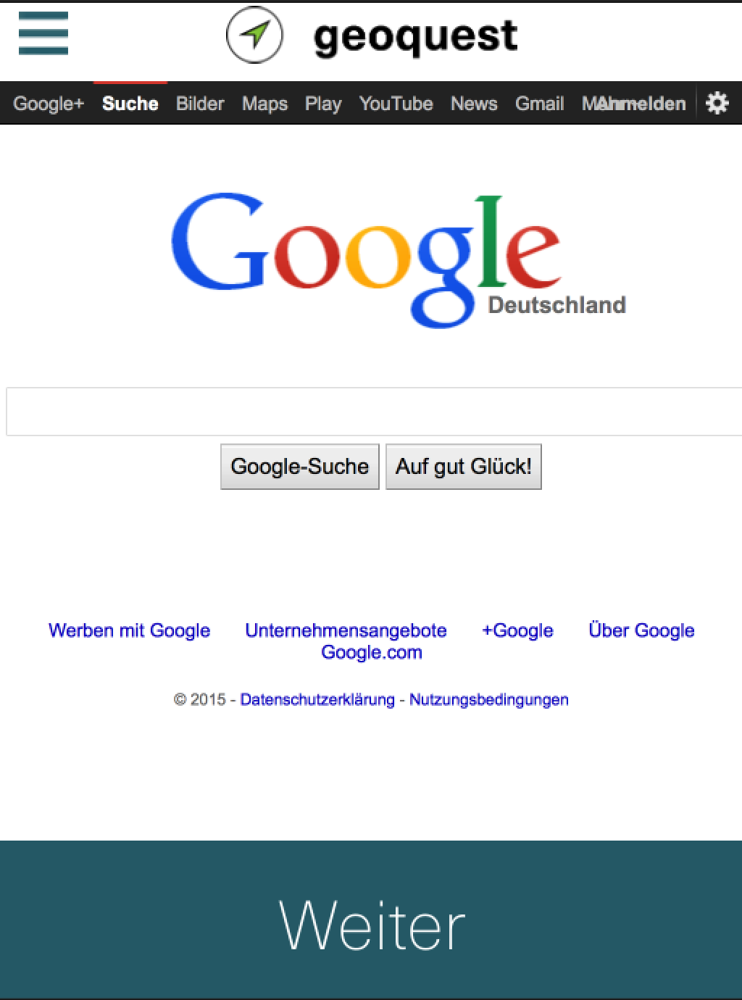
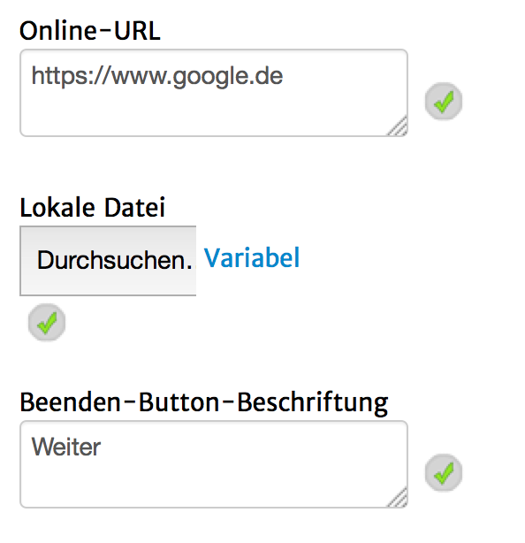

Mit diesem Seitentyp ist es möglich, eine Webseite im Vollformat anzuzeigen.
ACHTUNG! Dieser Seitentyp ist aktuell nur online einsetzbar.
Das sieht ungefähr so aus:

Folgende Einstellungsmöglichkeiten gibt es für diesen Seitentyp:
|  | Online-URL: Die URL zu der gewünschten Webseite (mit "https://" oder "https://" vorne !!!) Lokale Datei: wird aktuell ignoriert (Vorbereitung für Offline-Nutzung) Beenden-Button-Beschriftung: Beschriftung des Buttons unterhalb der Webseite. Dieser Button beendet die Seite. |